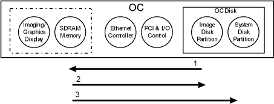
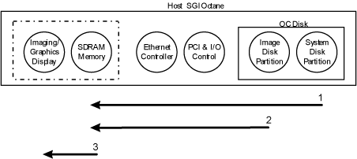
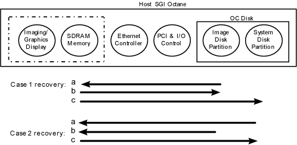
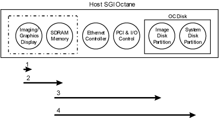
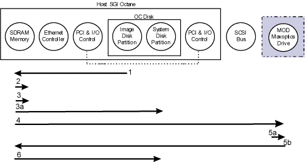
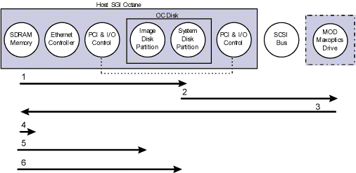
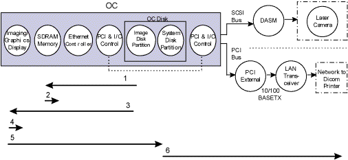

Proprietary to General Electric
Direction 5114045-800, Rev# 10
LightSpeed 4.X Service Information (Advanced)
Proprietary to General Electric |
After Image Create is complete, reconstructed scan data is available as pixel data in the OC’s image disk partition. Once Image Create is complete, the DMS process signal is received and Image Save will read the pixel data into the OC’s SDRAM, fill in the image header, save the image with header in the image disk, and send messages to dbwserver. dbwserver will create the appropriate entries to install the image into the image database (located in the system disk partition). dbwserver sends a message to imserver to put the image file in the appropriate place in the file system. After the image is installed into the database, the user will be able to see the image listed in the browser.
Illustration 1: Image Save - Behavioral Signal and Process Flow Diagram

Table 1: Image Save - Functional Operation & Troubleshooting
| Signal flow # | Reporting Host | Software Process | Software Function | FRU(s) involved |
|---|---|---|---|---|
| 0 | OC | dms | Signal to install image received | Ethernet Ctrl & PCI |
| 1 | OC | imserver | Pixel data sent to SDRAM & header info filled in. | SDRAM, Ethernet Ctrl, & PCI |
| 2 | OC | imserver | Image Header data sent to Image Disk | SDRAM, Ethernet Ctrl, PCI, & Image Disk |
| 3 | OC | dbwserver | Image installed in database. (Exam listed in the Browser.) | SDRAM, Ethernet Ctrl, PCI, & System Disk |
ide> level diagnostics
fx
scsistat
All communication between the SDRAM or Image/Graphics Display hardware and the Image or System Disks goes through the Ethernet controller and the internal PCI.
Image Restore starts when the user selects an image from the browser to display using the viewer or mini-viewer. The image database (DB) entry is read from the system disk partition. The corresponding image and header is retrieved from image disk partition and loaded into Shared Memory located in (SDRAM). In memory, the header information is checked for consistency (checksum), the image is sent to the Graphics Display Hardware (GDHW), and it gets displayed in a viewport on the right head CRT.
Illustration 2: Image Restore - Behavioral Signal and Process flow Diagram

Table 2: Image Restore - Functional Operation & Troubleshooting
| Signal flow # | Reporting Host | Software Process | Software Function | FRU(s) involved |
|---|---|---|---|---|
| 0 | OC | browser | Operator selects image from browser | Mouse, SDRAM, Ethernet Ctrl, PCI, & System Disk |
| 1 | OC | dbrserver | DB entry read into SDRAM. | SDRAM, Ethernet Ctrl, PCI, & System Disk |
| 2 | OC | XrViewer | Image loaded to SDRAM, & header consistency checked. | SDRAM, Ethernet Ctrl, PCI, & Image Disk |
| 3 | OC | ExamRxDisplay, AvViewer, XrViewer | Image sent to GDHW & displayed. | SDRAM, Ethernet Ctrl, Graphics Display HW |
ide> level diagnostics
fx
All communication between the SDRAM or Image/Graphics Display hardware and the Image or System Disks goes through the Ethernet controller and the internal PCI.
All communication between the Graphics Display HW and the SDRAM/Drives goes though the Ethernet Controller
From a software perspective, the OC disk in made up of two main partitions, the Image Disk and the System Disk partitions. The Image Disk Partition is where the image pixel data is stored, /usr/g/sdc_image_pool. The System Disk partition includes the database in /usr/g/informix, queue entries for Archive, Network, and Filming, and executable programs that handle job coordination.
There may be some instances when the database, and the image disk partitions lose synchronization. Two common examples where this could happen are:
Case 1) the scan data has been reconstructed and the pixel/image data has been saved into the image disk partition but the Image Save failed so the image entry did not get installed into the database; or,
Case 2) an image was removed from the image disk partition and the entries did not get removed from the database.
The Disk Management process that runs during startup checks for discrepancies between the database and the image disk partition, and updates the database accordingly (IT MAY TAKE UP TO 30 MINUTES TO COMPLETE CHECKS). This database recovery/update happens in the background. During recovery (case 1), (a) the pixel data in the image disk partition is read into the SDRAM, where the header is filled (checksum & other information gets filled in), (b) the image and header are saved into the image disk partition, and (c) the image is installed in (entries are added to) the database in the system disk partition. During database update for images removed (case 2), (a) the system reads all database entries into the memory, (b) checks for corresponding images in the image disk partition, and (c) removes those database entries that do not have corresponding images in the image disk partition. Error messages should posted in the error log indicating that the Data-base Recovery process is running as well as indicating corresponding changes to the database.
Illustration 3: Image db Recovery/Reconstruction - Behavioral Signal and Process Flow

Table 3: Image Database Recovery - Functional Operation & Troubleshooting
| Signal flow # | Reporting Host | Software Process | Software Function | FRU(s) involved |
|---|---|---|---|---|
| 1a | OC | imserver | Pixel data read into memory header w/checksum & info | OC Disk, Memory |
| 1b | OC | imserver | Image and header are saved into image disk partition | OC Disk, Memory |
| 1c | OC | imserver | Entries added to database | OC Disk |
| 2a | OC | imserver | All database entries read into memory | OC Disk, Memory |
| 2b | OC | imserver | Comparison w/image partition | Memory |
| 2c | OC | dbwserver | Removal of any db entries w/no corresponding images | OC Disk |
ide> level diagnostics
fx
When images are displayed in the right head CRT (viewer), they reside in the graphics display hardware. When the operator requests a Screen Save (either in ExamRx or ImageWorks desktop), the graphics display hardware renders the images to create the screen saved image data. The Screen Save (SS) image header is generated and filled with checksum & other information in the SDRAM. The SS image data is saved to the image disk partition and the SS image entries are added to the database in the system disk partition.
Illustration 4: Screen Save - Behavioral Signal and Process flow Diagram

Table 4: Screen Save - Functional Operation & Troubleshooting
| Signal flow # | Reporting Host | Software Process | Software Function | FRU(s) involved |
|---|---|---|---|---|
| 0 | OC | Operator selects Screen Save | Mouse, Ethernet Ctrl & PCI | |
| 1 | OC | Images rendered and generate SS image data. | Graphics Display HW | |
| 2 | OC | SS image data header information filled in. | Graphics Display HW, SDRAM, Ethernet Ctrl, & PCI | |
| 3 | OC | imserver | Image & Header data saved to Image Disk | SDRAM, Ethernet Ctrl, PCI, & Image Disk |
| 4 | OC | dbwserver | DB Installation for SS image. (selectable from Browser) | SDRAM, Ethernet Ctrl, PCI, & System Disk |
ide> level diagnostics
All communication between the SDRAM or Image/Graphics Display hardware and the Image or System Disks goes through the Ethernet controller and the internal PCI.
All communication between the Graphics Display HW and the SDRAM/Drives goes though the Ethernet Controller.
Once the operator requests an image to be archived, the image is loaded into shared memory (in SDRAM) where the header is checked. The image is translated to DICOM format (if needed). The archive job information is added to the archive queue in the Octane memory and to the System Disk. When the queue for that image becomes active, the image is sent to the MOD through the external PCI, through the SCSI bus/cable, and then to the MOD drive. The image is saved in the MOD, the MOD directory structure gets updated, and the database “archived” flag gets updated in the system disk partition to indicate image has been saved, and the queue is removed from the System Disk.
Illustration 5: Archive Save - Behavioral Signal and Process flow Diagram

Table 5: Archive Save - Functional Operation & Troubleshooting
| Signal flow # | Reporting Host | Software Function | FRU(s) involved |
|---|---|---|---|
| 0 | OC | Operator requests an image archive. | Mouse/Keyboard, SDRAM, Ethernet Ctrl, PCI |
| 1 | OC | Load image to SDRAM and check header. | SDRAM, Ethernet Ctrl, PCI, & Img Disk |
| 2 | OC | Translate image to DICOM (if necessary) | SDRAM |
| 3 | OC | Archive queue entry in memory | SDRAM |
| 3a | OC | Archive queue saved to System Disk | System Disk |
| 4 | OC | Image sent to MOD | SDRAM, Ethernet Ctrl, PCI, System Disk, SCSI bus, & MOD |
| 5a | OC | Image saved on MOD, dir structure updated. | SDRAM, Ethernet Ctrl |
| 5b | OC | Acknowledge successful save. | PCI, System Disk, SCSI bus, & MOD |
| 6 | OC | Image database updated to “archived” status; Queue is removed from System Disk. | SDRAM, Ethernet Ctrl, PCI, System Disk. |
ide> level diags
scsistat, hinv
All communication between the SDRAM or Image or System Disks goes through the Ethernet controller and the internal PCI.
All communication between the SDRAM or Disk Drives and peripheral components like the MOD or CD-ROM goes though the external PCI I/O Control and the SCSI bus.
Once the operator requests an image to be restored from the MOD, the archive restore job information is added to the archive restore queue. When the queue for a particular image becomes active, a read request goes to the MOD, the image is read from the MOD, translated from DICOM format (if appropriate), and loaded into shared memory. The image header information is checked in the SDRAM (checksum and other information verified). Finally, the image is saved into the image disk partition with the header and entries are added to the database in the system disk partition so the exam(s) appear in the Browser.
Illustration 6: Archive Restore - Behavioral Signal and Process Flow Diagram

Table 6: Archive Restore - - Functional Operation & Troubleshooting
| Signal flow # | Reporting Host | Software Function | FRU(s) involved |
|---|---|---|---|
| 0 | OC | Operator request image restore from MOD | Mouse/Keyboard, SDRAM, Ethernet Ctrl, PCI |
| 1 | OC | Add entries to restore queue | SDRAM, Ethernet Ctrl, PCI, & System Disk |
| 2 | OC | Read request sent to MOD | SDRAM, Ethernet Ctrl, PCI, System Disk, SCSI bus, & MOD |
| 3 | OC | Image sent from MOD, translated and loaded into shared memory | SDRAM, Ethernet Ctrl, PCI, System Disk, SCSI bus, & MOD |
| 4 | OC | Check image header | SDRAM |
| 5 | OC | Image saved into the Image Disk | SDRAM, Ethernet Ctrl, Img Disk & PCI |
| 6 | OC | Image database updated. | SDRAM, Ethernet Ctrl, PCI, System Disk. |
ide> level diagnostics
scsistat, hinv
Look at I/OS logs in the System Browser for more information in case of trouble (arslog).
Once the operator requests an image to be filmed, the image is loaded into shared memory and the header is checked in the SDRAM. The image is transferred to the Graphics Display Hardware, which performs hardware rendering in the image to be filmed & creates a film file. The film file is saved in the system disk partition, and the film job information is added to the filming queue in the system disk partition. When the queue entry for a particular image becomes active, the image is sent to the specified device as follows:
(if using a Laser Camera) to the DASM, through the PCI I/O Controller and to the SCSI cable; or,
(if using a DICOM printer, which will be installed in the network) to the LAN transceiver, through the PCI I/O Controller, into the PCI bus and 10/100BASET connection.
Illustration 7: Filming - Behavioral Signal and Process flow Diagram

Table 7: Filming - Functional Operation & Troubleshooting
| Signal flow # | Reporting Host | Software Function | FRU(s) involved |
|---|---|---|---|
| 0 | OC | Operator request image to film. | Mouse/Keyboard, SDRAM, Ethernet Ctrl, PCI |
| 1 | OC | Load image to shared memory (SDRAM) | SDRAM, Ethernet Ctrl, PCI, & System. Disk |
| 2 | OC | Check image header. | SDRAM, Ethernet Ctrl, PCI, & Image Disk |
| 3 | OC | Image sent to Graphics Display Hardware (GDHW). | SDRAM, Ethernet Ctrl, Graphics Display HW |
| 4 | OC | Image rendered in GDHW, & film data created | SDRAM, Ethernet Ctrl, Graphics Display HW |
| 5 | OC | Save Film File to System Disk, & generate queue entries. | GDHW, SDRAM, PCI, Ethernet Ctrl, & Syst.Disk |
| 6 | OC | Image sent to CameraORDICOM Printer | SDRAM, Ethernet Ctrl, PCI, System Disk, SCSI bus, & DASMSDRAM, Ethernet Ctrl,PCI, System Disk, PCI bus, & LAN Transceiver |
ide> level diagnostics
showdasm, scsistat, hinv
All communication between the SDRAM or Image or System Disks goes through the Ethernet controller and the internal PCI.
All communication between the SDRAM or Disk Drives and peripheral components like the MOD or CD-ROM goes though the external PCI I/O Control and the SCSI bus.
All communication between the SDRAM or Disk Drives and network components like the DICOM Printer goes though the external PCI I/O Control, and through the PCI bus and the LAN transceiver.
For additional information on DASM/Filming Troubleshooting, refer to DASM II Troubleshooting.